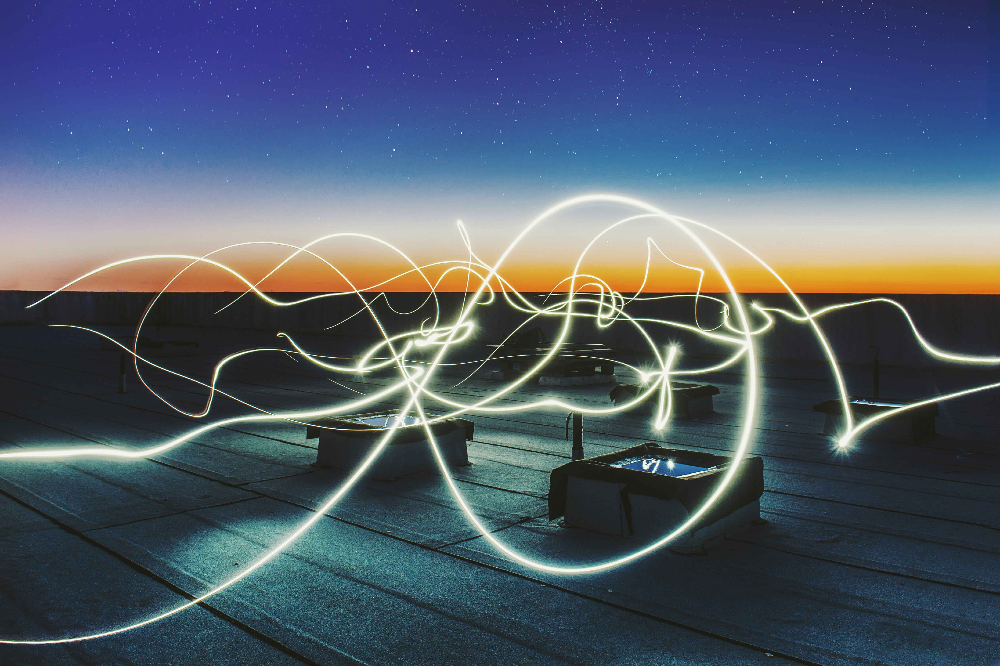
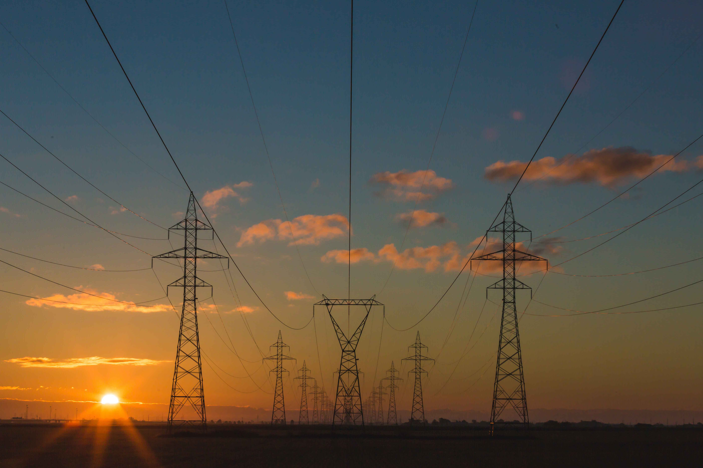
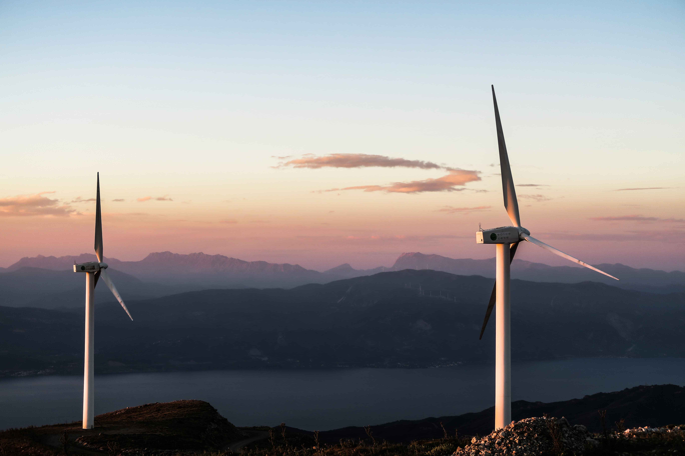

¿Que es la Energia?
La energía se define como la capacidad de realizar trabajo, de producir movimiento, de generar cambio. Es inherente a todos los sistemas físicos, y la vida en todas sus formas, se basa en la conversión, uso, almacenamiento y transferencia de energía. Puede presentarse como energía potencial (energía almacenada) o como energía cinética (energía en acción), siendo estas dos formas interconvertibles, es decir, la energía potencial liberada se convierte en energía cinética, y ésta cuando se acumula se transforma en energía potencial. La energía no puede ser creada ni destruida, sólo transformada de una forma en otra (Primera Ley de la Termodinámica). La vida, en todas sus formas, es completamente dependiente de la energía. En todos los procesos vitales está involucrada la energía. Los vegetales consumen energía solar (energía radiante) para poder, a través del proceso fotosintético, elaborar sustanciasenergéticas (hidratos de carbono) que les permiten disponer de la energía química necesaria para desarrollar sus funciones vitales. Los organismos animales se nutren energeticamente, en forma directa (herbívoros) o indirecta (carnívoros) de los vegetales es decir de la energía solar. El ser humano ha desarrollado, a través de su historia, sistemas de vida en los que además de la energía necesaria para su subsistencia biológica (alimento) consume energía para mantener y desarrollar sus sistemas culturales y satisfacer así necesidades extraalimentarias (vivienda, transporte, bienes y servicios,...). Para ello la humanidad ha recurrido al uso de distintas fuentes energéticas; en un principio fue el fuego, la energía solar, la energía animal, la energía eólica (viento), la hidráulica (agua)... y en el último siglo la energía de combustibles fósiles (petróleo, gas y carbón) y la nuclear.
Importancia de la Energia
Como la tenemos tan incorporada a nuestra vida cotidiana, olvidamos cuánto la necesitamos. Pero, basta que se interrumpa el flujo eléctrico para entrar en pánico porque se detiene la producción, las telecomunicaciones, el bombeo de agua potable , las calles se vuelven inseguras a falta de luz, se genera caos vial a falta de semáforos y algunos servicios de salud no se pueden ofrecer porque los equipos no cuentan con suministro eléctrico, además que la calidad de los medicamentos puede verse comprometida a falta de refrigeración. Es importante anotar que la energía es lo que es, antes o después de transformarse. No se destruye, pero puede manifestarse de distintas formas como energía potencial, cinética o mecánica. La energía potencial está asociada a la posición de un cuerpo, ya sea respecto a su altura (energía potencial gravitatoria) o sus propiedades elásticas (energía potencial elástica). Por ejemplo, el embalse de una planta hidroeléctrica es energía potencial a la espera de convertirse en cinética. Dependiendo de la altura a la que se encuentre ese embalse, así será su energía potencial. La energía cinética está asociada al movimiento. Siguiendo con el ejemplo de la planta hidroeléctrica, cuando se abren las esclusas y corre el agua, esa energía potencial del embalse se convierte en energía cinética que permite mover las turbinas de la planta y con ello generar electricidad. El concepto de energía mecánica permite englobar tanto la energía potencial como cinética de un sistema. En Centroamérica, por ejemplo, mucha de la electricidad es generada a través de plantas hidroeléctricas. La energía potencial contenida en el embalse se transforma en energía cinética cuando se abren las esclusas y corre el agua para mover las turbinas. Luego, y gracias a un alternador, esa energía cinética se convierte en energía eléctrica. Cuando, en una vivienda, una persona utiliza la estufa para cocinar los alimentos entonces esa energía eléctrica se vuelve energía calórica. En todo este proceso, la energía sigue siendo la misma. Sin importar cuantas transformaciones haya tenido, ni cuán rápidas o lentas hayan sido. A esto se le conoce como ley de la conservación de la energía.
Energias Renovables
Las energías renovables son aquellas que se obtienen a partir de fuentes naturales que producen energía de forma inagotable e indefinida. Por ejemplo, la energía solar, la energía eólica o la energía mareomotriz son fuentes renovables de energía. También se consideran renovables cuando se obtienen a partir de fuentes que se regeneran con el tiempo de manera natural, como la masa forestal. Una de las principales ventajas de las energías renovables es que, además de ser inagotables, presentan un nulo o bajo impacto negativo sobre el medio ambiente, por lo que se consideran energías limpias. En la actualidad las energías renovables son una realidad presente en nuestra sociedad y sus beneficios para el medioambiente son más que evidentes.